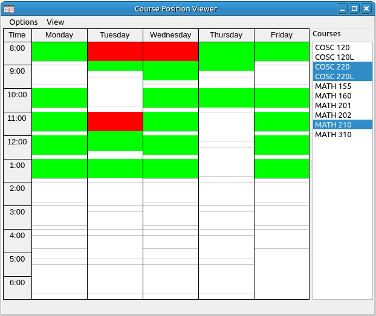

Course Position Viewer
The course position viewer is simply a viewer with no course alteration functionality. When the user selects the courses from the list on the right the positions of the union of the course list is graphed in the weekly viewer. Places where there are no overlaps are in green and overlaps are in different colors depending on the view options you select. The status bar shows the courses the mouse is hovering over. In the case of overlaps the status bar shows all the classes that are being hovered over. This viewer is useful for determining if there are key classes that overlap and should not. It also shows the user the spread of classes through the week to see if there are enough different times for students to enroll.

Options:
- Save Image: Saves the weekly view image to an image file. The file type is any type supported by your operating system and the graphical user interface. The three main types supported are png, jpg, and bmp. The type is automatically selected from the extension used for the filename. The default is png.
- Copy Image: This will copy the image to the system clipboard.
- Print: This will send the weekly image to the selected printer using the dimensions and scaling that are selected in the Image Printing Options.
- Print Preview: This will invoke the print preview dialog for the weekly image.
- Show Status Bar: Toggle for viewing the status bar.
View:
- Courses: Sets the list on the right to course mode, in this mode all classes of the same course are grouped together.
- Individual Classes: Sets the list on the right to class mode, in this mode each individual class is listed.
- Highlight Any Overlap: This mode uses green for no overlap and red for any number of overlaps.
- Highlight up to 3 Overlaps: This mode uses three colors green for no overlap, dark green-blue for 2 courses, and red for three or more.
- Highlight up to 4 Overlaps: This mode uses four colors green for no overlap, dark green-blue for 2 courses, purple for three courses, and red for four or more.
- Highlight up to 5 Overlaps: This mode uses four colors green for no overlap, dark green-blue for 2 courses, purple for three courses, cyan for four courses, and red for five or more.
- Highlight up to 6 Overlaps: This mode uses four colors green for no overlap, dark green-blue for 2 courses, purple for three courses, cyan for four courses, yellow for five courses, and red for six or more.
- Include Tentative Classes: Toggle to include tentative courses in the graph.